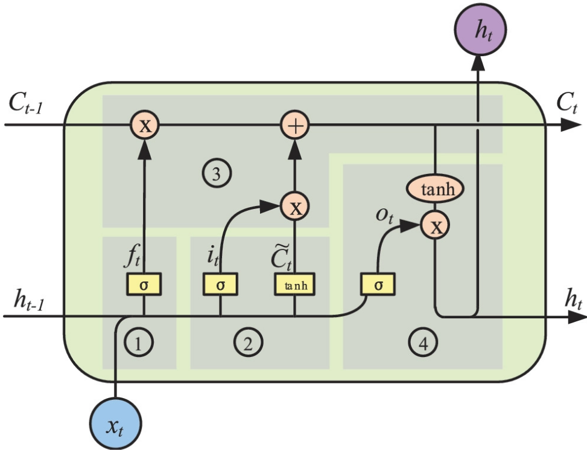
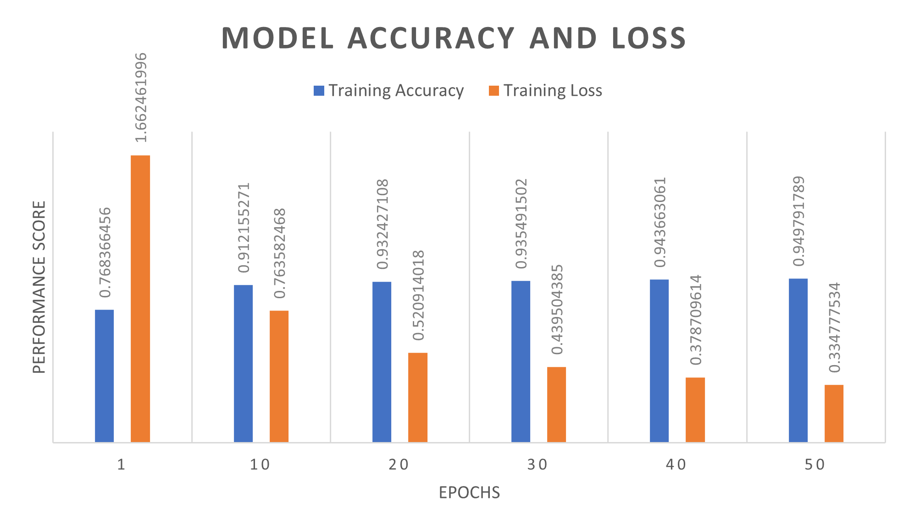

PROJECT INTRODUCTION
Although literature supports the notion that seizure detection algorithms require the ability to differentiate convulsive movements from common everyday activities, little has been done to achieve this. Seizure detection algorithms are commonly trained using sequential event prediction, where the measurements from past seizures are used to predict future occurrences. This approach has maintained a high false positive rate throughout the subject field, as the detection process fails to account for movements that share the same spatial coordinates, often incorrectly classifying unrelated movements as a positive event. Therefore, seizure detection algorithms need to distinguish non-seizure movements from the rhythmic jerking and convulsions observed during a generalised event.
This paper addresses this problem at an algorithmic level, and develops a deep learning model for accelerometer detection that combines activity recognition with traditional accelerometer based seizure detection techniques.
Dataset
For this research project data was collected from 10 participants (eight healthy adults and two with juvenile myoclonic epilepsy (JME) using a wrist-worn tri-axial ACM and gyroscope operating at a frequency of 25Hz. Spanning a 48-hour period, participants were instructed to carry out the following movements
Brush teeth, Downstairs, Jogging, Lie-down, Make sandwich, Seizure, Sitting, Sleeping, Standing, Upstairs, Walking, Watching TV
The movements were selected using the list by Lockman et al [12], who identified several movements that share similar coordinates in three-dimensional space with a generalised seizure. 12 epileptic seizures were recorded from the two adults diagnosed with epilepsy, whilst a further 34 seizures were simulated by the remaining participants. Video recordings of simulated and non-simulated seizures were used to accurately guide participants when recreating the muscle twitches and convulsions seen in a generalised onset.
Feature Engineering and pre-processing
Participants performed each movement 5 times with a maximum duration of 30 seconds for each movement. The data recorded for each movement was then converted into a series of fixed length time sequences, each spanning 10 seconds and containing 200 (20 records p/s * 10 second time segment ) records per fixed length sequence.

Network Architecture
This research project used a stacked LSTM neural network for multi-class classification of fixed length time sequences. The model consists of 2 fully connected layers and 2 stacked LSTM layers with 64 LSTM units in each. A ReLU activation function was used to feed data from the fully connected layers to the LSTM units in Layer 1.
.png)
The following components were used to construct the model.
L2 Regularisation
The model used an L2 regularizer to prevent overfitting and reduce generalisation errors without altering the training error value.
Loss Function
The model used a cross-entropy loss (log loss) function for single label categorisation. The L2 regularizer was then used with a cross-entropy loss function to improve the networks performance.
Softmax Function
A softmax function was used for the final layer of the network and takes an input vector of K-values and transforms it into a vector of K-values that have a combined sum of 1 so that they can be used as probability measures for multi-class classification.
Adaptive Moment Estimation
The model used the Adam stochastic optimisation algorithm as it combines the advantages of Adaptive Gradient (AdaGrad) and Root Mean Square Propagation (RMSProp) for first-order gradient-based optimisation of the stochastic objective function.

Implementation
The model was developed using the Python programming language, with the Tensor Flow 2.0 framework and Keras dp learning library. Google Colab was used as the development environment for this research. Colab’s data analysis and graphical processing tools were leveraged during the training and testing of the model to reduce development time.
Train/Test Split
After preprocessing, the dataset was split into a 75:25 ratio with 75% of the data allocated to train the model and the remaining 25% used to test its performance.
Learning Rate
The learning rate passed to the models ADAM optimizer was set at 0.0025
L2 Loss
The L2 regularizer used a pre-set L2 loss measure of 0.0015.
Epochs
The model was trained for 50 epochs. As accuracy increases the loss value decreases until they both stabilise at 35 and 50 epochs, respectively.
Evaluation metrics
A series of experiments were conducted to evaluate the performance of the developed LSTM network. The experiments evaluate the networks classification capabilities when differentiating types of movement.
A confusion matrix was used to summarises the predicted and actual values outputted by the model. These values are then classified as True-positive (TP), False-positive (FP), True-negative (TN) and False-negative (FN).
The output values of the confusion matrix were then used to measure the model’s performance regarding accuracy, precision, recall and f-measure.
Results
The following table shows the precision, recall and f-measure scores for the model based on the classified results for each movement in our dataset. Precision represents the proportion of positive predictions that were made, thus the network distinguished epileptic seizures 92% of the time.
A recall score of 87% was recorded, which indicates the number of times a positive value was correctly identified for each activity. Furthermore, the recorded f-measure (harmonic mean) was recorded at 89%, which was above expected results. The LSTM model distinguished several types of movement before predicting a generalised seizure, with accuracy and loss score of 94.74% and 0.334 respectively.
The LSTM model distinguished several types of movement before predicting a generalised seizure, with an accuracy and loss score of 94.74% and 0.334 respectively.
